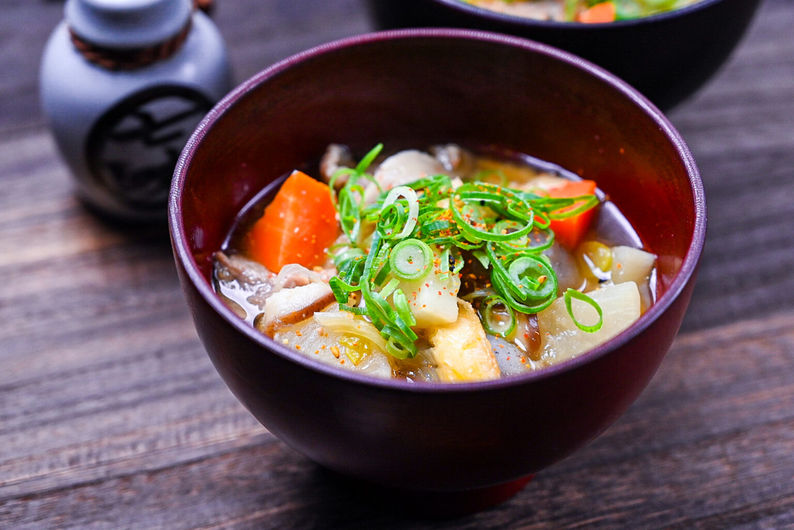

Tonjiru

Midnight Diner's Staple Menu Item: Tonjiru
Midnight Diner is a Japanese slice of life show that details the chrnoicles of the patrons of the Midnight Diner, a diner that is only open from midnight to 7 a.m. in Tokyo's Shinjuku District. The head chef, affectionately known as "Master" to his patrons, prepares anything his patrons want as long as he has the ingredients for it. However, he only has four items on his menu: Shochu, Sake, Beer, and a Tonjiru meal. Since tonjiru is essentially the sole menu item, it will be the recipe featured from this show.
Tonjiru is a heartier version of miso soup that features a few ingredients : root vegetables - particularly carrots, potatoes, burdock root, and daikon radish, mushrooms, tofu, konjac jelly, dashi broth, miso paste, and the most distinctive ingredient: pork belly. This recipe will be based off the soup that Master makes at the beginning of every Midnight Diner episode. Since a few of the ingredients are hard to find outside of Japan, visit a nearby Asian grocery store to find them. If there are none by you, feel free to substitute or omit some ingredients all together.
By following this recipe, which is based off of the tonjiru recipe from Just One Cookbook and the recipe shown at the beginning of Midnight Diner, you should end up with a nice and comforting meal that is sure to fill you up, especially on a chilly day. Enjoy!
Ingredients
- Thinly sliced pork belly - if you are unable to find this particular cut, another cut of pork should be fine. Feel free to omit or substitute with another protein if you do not eat meat or pork.
- Dashi stock - I personally make my stock using dashi powder
- Miso Paste
- Fried tofu pouches
- Daikon radish
- Burdock root
- Carrots
- Mushrooms
- Konjac jelly
- Green onions
Optional Ingredients for full Midnight Diner-esque Experience
- Rice
- Beer, sake, or shochu
Steps
- Thinly slice your meat if you did not buy it pre-sliced. If omitting meat and using tofu, cut your tofu into quarter inch squares.
- Thinly slice your mushrooms. Set aside.
- Chop the konjac jelly block into quarter-inch pieces. Set aside.
- Roughly chop all of your vegetables. Then, set them aside for later.
- Heat oil in a pot. Once oil is heated, add meat and saute until cooked.
- Once meat is cooked, add vegetables, mushrooms, and konjac to pot and saute until vegetables are soft.
- After sauteing vegetables, add dashi stock to the pot and bring soup to a boil.
- While waiting on soup to boil, thinly slice fried tofu and green onion.
- Add fried tofu and green onion to pot once the soup is boiling.
- Simmer soup for about 15 minutes, or whenever the root vegetables are thoroughly cooked.
- Once vegetables are fully cooked, turn off the heat.
- Add miso paste before serving to ensure that the full flavor of the miso is present. Use a small strainer to make disolving miso easier and quicker.
- Enjoy this soup either by itself or, for the full Midnight Diner experience, with a side of rice and either beer, sake, or shochu.